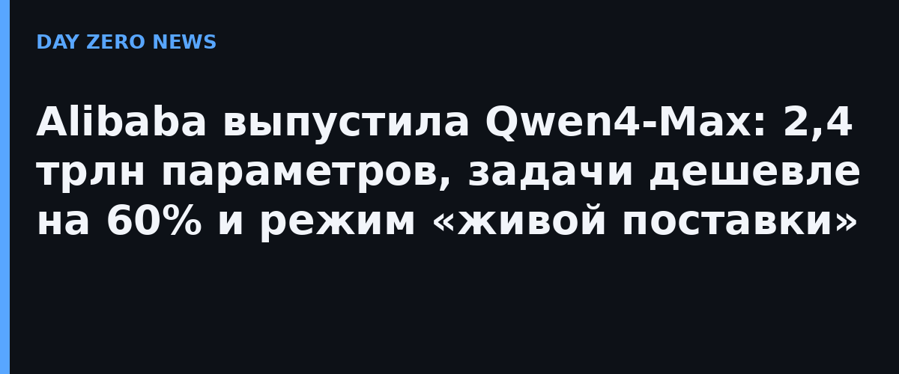

Команда Qwen (Алибаба) официально выпустила Qwen4-Max — первую модель четвёртого поколения. Это разреженная модель MoE (смесь экспертов) с основой в 2,4 трлн параметров и активацией 71 млрд на токен, с контекстным окном в 1 млн токенов и поддержкой изображений из коробки. 11 ноября модель была доступна только как ограниченная предпросмотрная версия, а теперь стала постоянным флагоманом на платформе Qwen: доступна через приложение и API. Младшие версии пообещали выпустить с открытыми исходниками.
В блоге Qwen ключевой акцент — на производительности и стоимости: на бенчмарке Work360 модель получила 52,69 балла против 47,74 у Qwen3.8-Max, расход токенов снижен на 24-35% (а на тесте агентной работы с терминалом Terminal-Bench 4.0 — почти вдвое), а средняя стоимость задачи упала с 26,58 до 11,16 юаней — на 58%. SCMP, ссылаясь на анонс, округляет до 60% экономии. В архитектуре обновили сразу три уровня: часть слоёв использует Gated DeltaNet со сжатием истории в фиксированное состояние, разреженное внимание по блокам, четыре параллельные остаточные ветви и n-gram эмбеддинги.
Для агентных задач ввели режим Live Delivery: модель выдаёт сначала рабочую первую версию результата, а затем наращивает её по обратной связи пользователя. Плагин для этого режима Qwen-Live-Delivery Plugin также открыт. Демонстрации: 3D-моделирование в Blender, разработка игр на Unity и Unreal, программирование обработки для промышленного производства (по оценке Алибабы, программирование одной детали сократилось примерно с 475 минут ручной работы до 24).
SCMP отдельно отмечает: вместе со снижением цен Алибаба ужесточила защитные ограничения модели — guardrails против использования её в кибератаках и генерации вредоносного кода. На фоне того, как открытые модели всё активнее применяются в реальных рабочих процессах, шаг заметный: производительность и защита теперь подаются как равноправные аргументы.
Релиз встраивается в гонку флагманов ноября: несколько лабораторий за две недели выпустили модели нового поколения, и впервые над ценой на API так явно доминирует не «самая умная», а «самая дешёвая при том же качестве».
В России направление корпоративных ИИ-платформ такого масштаба пока ограничено вертикальными решениями на открытых весах (GigaChat, YandexGPT). Официально подтверждённых аналогов с параметрами больше триллиона в стране нет.